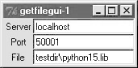
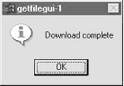
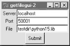
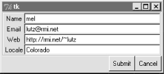
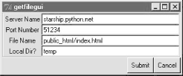

| I l@ve RuBoard |
|
10.5 A Simple Python File ServerTime for something more realistic. Let's conclude this chapter by putting some of these socket ideas to work in something a bit more useful than echoing text back and forth. Example 10-10 implements both the server-side and client-side logic needed to ship a requested file from server to client machines over a raw socket. In effect, this script implements a simple file download system. One instance of the script is run on the machine where downloadable files live (the server), and another on the machines you wish to copy files to (the clients). Command-line arguments tell the script which flavor to run and optionally name the server machine and port number over which conversations are to occur. A server instance can respond to any number of client file requests at the port on which it listens, because it serves each in a thread. Example 10-10. PP2E\Internet\Sockets\getfile.py########################################################
# implement client and server side logic to transfer an
# arbitrary file from server to client over a socket;
# uses a simple control-info protocol rather than
# separate sockets for control and data (as in ftp),
# dispatches each client request to a handler thread,
# and loops to transfer the entire file by blocks; see
# ftplib examples for a higher-level transport scheme;
########################################################
import sys, os, thread, time
from socket import *
def now(): return time.ctime(time.time())
blksz = 1024
defaultHost = 'localhost'
defaultPort = 50001
helptext = """
Usage...
server=> getfile.py -mode server [-port nnn] [-host hhh|localhost]
client=> getfile.py [-mode client] -file fff [-port nnn] [-host hhh|localhost]
"""
def parsecommandline():
dict = {} # put in dictionary for easy lookup
args = sys.argv[1:] # skip program name at front of args
while len(args) >= 2: # example: dict['-mode'] = 'server'
dict[args[0]] = args[1]
args = args[2:]
return dict
def client(host, port, filename):
sock = socket(AF_INET, SOCK_STREAM)
sock.connect((host, port))
sock.send(filename + '\n') # send remote name with dir
dropdir = os.path.split(filename)[1] # file name at end of dir path
file = open(dropdir, 'wb') # create local file in cwd
while 1:
data = sock.recv(blksz) # get up to 1K at a time
if not data: break # till closed on server side
file.write(data) # store data in local file
sock.close()
file.close()
print 'Client got', filename, 'at', now()
def serverthread(clientsock):
sockfile = clientsock.makefile('r') # wrap socket in dup file obj
filename = sockfile.readline()[:-1] # get filename up to end-line
try:
file = open(filename, 'rb')
while 1:
bytes = file.read(blksz) # read/send 1K at a time
if not bytes: break # until file totally sent
sent = clientsock.send(bytes)
assert sent == len(bytes)
except:
print 'Error downloading file on server:', filename
clientsock.close()
def server(host, port):
serversock = socket(AF_INET, SOCK_STREAM) # listen on tcp/ip socket
serversock.bind((host, port)) # serve clients in threads
serversock.listen(5)
while 1:
clientsock, clientaddr = serversock.accept()
print 'Server connected by', clientaddr, 'at', now()
thread.start_new_thread(serverthread, (clientsock,))
def main(args):
host = args.get('-host', defaultHost) # use args or defaults
port = int(args.get('-port', defaultPort)) # is a string in argv
if args.get('-mode') == 'server': # None if no -mode: client
if host == 'localhost': host = '' # else fails remotely
server(host, port)
elif args.get('-file'): # client mode needs -file
client(host, port, args['-file'])
else:
print helptext
if __name__ == '__main__':
args = parsecommandline()
main(args)
This script doesn't do much different than the examples we saw earlier. Depending on the command-line arguments passed, it invokes one of two functions:
The most novel feature here is the protocol between client and server: the client starts the conversation by shipping a filename string up to the server, terminated with an end-of-line character, and including the file's directory path in the server. At the server, a spawned thread extracts the requested file's name by reading the client socket, and opens and transfers the requested file back to the client, one chunk of bytes at a time. 10.5.1 Running the File Server and ClientsSince the server uses threads to process clients, we can test both client and server on the same Windows machine. First, let's start a server instance, and execute two client instances on the same machine while the server runs: [server window, localhost] C:\...\PP2E\Internet\Sockets>python getfile.py -mode server
Server connected by ('127.0.0.1', 1089) at Thu Mar 16 11:54:21 2000
Server connected by ('127.0.0.1', 1090) at Thu Mar 16 11:54:37 2000
[client window, localhost]
C:\...\Internet\Sockets>ls class-server.py echo.out.txt testdir thread-server.py echo-client.py fork-server.py testecho.py echo-server.py getfile.py testechowait.py C:\...\Internet\Sockets>python getfile.py -file testdir\python15.lib -port 50001 Client got testdir\python15.lib at Thu Mar 16 11:54:21 2000 C:\...\Internet\Sockets>python getfile.py -file testdir\textfile Client got testdir\textfile at Thu Mar 16 11:54:37 2000 Clients run in the directory where you want the downloaded file to appear -- the client instance code strips the server directory path when making the local file's name. Here the "download" simply copied the requested files up to the local parent directory (the DOS fc command compares file contents): C:\...\Internet\Sockets>ls class-server.py echo.out.txt python15.lib testechowait.py echo-client.py fork-server.py testdir textfile echo-server.py getfile.py testecho.py thread-server.py C:\...\Internet\Sockets>fc /B python1.lib testdir\python15.lib Comparing files python15.lib and testdir\python15.lib FC: no differences encountered C:\...\Internet\Sockets>fc /B textfile testdir\textfile Comparing files textfile and testdir\textfile FC: no differences encountered As usual, we can run server and clients on different machines as well. Here the script is being used to run a remote server on a Linux machine and a few clients on a local Windows PC (I added line breaks to some of the command lines to make them fit). Notice that client and server machine times are different now -- they are fetched from different machine's clocks and so may be arbitrarily skewed: [server telnet window: first message is the python15.lib request
in client window1]
[lutz@starship lutz]$ python getfile.py -mode server
Server connected by ('166.93.216.248', 1185) at Thu Mar 16 16:02:07 2000
Server connected by ('166.93.216.248', 1187) at Thu Mar 16 16:03:24 2000
Server connected by ('166.93.216.248', 1189) at Thu Mar 16 16:03:52 2000
Server connected by ('166.93.216.248', 1191) at Thu Mar 16 16:04:09 2000
Server connected by ('166.93.216.248', 1193) at Thu Mar 16 16:04:38 2000
[client window 1: started first, runs in thread while other client
requests are made in client window 2, and processed by other threads]
C:\...\Internet\Sockets>python getfile.py -mode client
-host starship.python.net
-port 50001 -file python15.lib
Client got python15.lib at Thu Mar 16 14:07:37 2000
C:\...\Internet\Sockets>fc /B python15.lib testdir\python15.lib
Comparing files python15.lib and testdir\python15.lib
FC: no differences encountered
[client window 2: requests made while client window 1 request downloading]
C:\...\Internet\Sockets>python getfile.py
-host starship.python.net -file textfile
Client got textfile at Thu Mar 16 14:02:29 2000
C:\...\Internet\Sockets>python getfile.py
-host starship.python.net -file textfile
Client got textfile at Thu Mar 16 14:04:11 2000
C:\...\Internet\Sockets>python getfile.py
-host starship.python.net -file textfile
Client got textfile at Thu Mar 16 14:04:21 2000
C:\...\Internet\Sockets>python getfile.py
-host starship.python.net -file index.html
Client got index.html at Thu Mar 16 14:06:22 2000
C:\...\Internet\Sockets>fc textfile testdir\textfile
Comparing files textfile and testdir\textfile
FC: no differences encountered
One subtle security point here: the server instance code is happy to send any server-side file whose pathname is sent from a client, as long as the server is run with a username that has read access to the requested file. If you care about keeping some of your server-side files private, you should add logic to suppress downloads of restricted files. I'll leave this as a suggested exercise here, but will implement such filename checks in the getfile download tool in Example 12-1.[8]
10.5.2 Adding a User-Interface FrontendYou might have noticed that we have been living in the realm of the command line for all of this chapter -- our socket clients and servers have been started from simple DOS or Linux shells. There is nothing stopping us from adding a nice point-and-click user interface to some of these scripts, though; GUI and network scripting are not mutually exclusive techniques. In fact, they can be arguably sexy when used together well. For instance, it would be easy to implement a simple Tkinter GUI frontend to the client-side portion of the getfile script we just met. Such a tool, run on the client machine, may simply pop up a window with Entry widgets for typing the desired filename, server, and so on. Once download parameters have been input, the user interface could either import and call the getfile.client function with appropriate option arguments, or build and run the implied getfile.py command line using tools such as os.system, os.fork, thread, etc. 10.5.2.1 Using Frames and command linesTo help make this all more concrete, let's very quickly explore a few simple scripts that add a Tkinter frontend to the getfile client-side program. The first, in Example 10-11, creates a dialog for inputting server, port, and filename information, and simply constructs the corresponding getfile command line and runs it with os.system. Example 10-11. PP2E\Internet\Sockets\getfilegui-1.py##########################################################
# launch getfile script client from simple Tkinter GUI;
# could also or os.fork+exec, os.spawnv (see Launcher);
# windows: replace 'python' with 'start' if not on path;
##########################################################
import sys, os
from Tkinter import *
from tkMessageBox import showinfo
def onReturnKey():
cmdline = ('python getfile.py -mode client -file %s -port %s -host %s' %
(content['File'].get(),
content['Port'].get(),
content['Server'].get()))
os.system(cmdline)
showinfo('getfilegui-1', 'Download complete')
box = Frame(Tk())
box.pack(expand=YES, fill=X)
lcol, rcol = Frame(box), Frame(box)
lcol.pack(side=LEFT)
rcol.pack(side=RIGHT, expand=Y, fill=X)
labels = ['Server', 'Port', 'File']
content = {}
for label in labels:
Label(lcol, text=label).pack(side=TOP)
entry = Entry(rcol)
entry.pack(side=TOP, expand=YES, fill=X)
content[label] = entry
box.master.title('getfilegui-1')
box.master.bind('<Return>', (lambda event: onReturnKey()))
mainloop()
When run, this script creates the input form shown in Figure 10-1. Pressing the Enter key (<Return>) runs a client-side instance of the getfile program; when the generated getfile command line is finished, we get the verification pop-up displayed in Figure 10-2. Figure 10-1. getfilegui-1 in actionFigure 10-2. getfilegui-1 verification pop-up10.5.2.2 Using grids and function callsThe first user-interface script (Example 10-11) uses the pack geometry manager and Frames to layout the input form, and runs the getfile client as a stand- alone program. It's just as easy to use the grid manager for layout, and import and call the client-side logic function instead of running a program. The script in Example 10-12 shows how. Example 10-12. PP2E\Internet\Sockets\getfilegui-2.py###############################################################
# same, but with grids and import+call, not packs and cmdline;
# direct function calls are usually faster than running files;
###############################################################
import getfile
from Tkinter import *
from tkMessageBox import showinfo
def onSubmit():
getfile.client(content['Server'].get(),
int(content['Port'].get()),
content['File'].get())
showinfo('getfilegui-2', 'Download complete')
box = Tk()
labels = ['Server', 'Port', 'File']
rownum = 0
content = {}
for label in labels:
Label(box, text=label).grid(col=0, row=rownum)
entry = Entry(box)
entry.grid(col=1, row=rownum, sticky=E+W)
content[label] = entry
rownum = rownum + 1
box.columnconfigure(0, weight=0) # make expandable
box.columnconfigure(1, weight=1)
Button(text='Submit', command=onSubmit).grid(row=rownum, col=0, columnspan=2)
box.title('getfilegui-2')
box.bind('<Return>', (lambda event: onSubmit()))
mainloop()
This version makes a similar window (Figure 10-3), but adds a button at the bottom that does the same thing as an Enter key press -- it runs the getfile client procedure. Generally speaking, importing and calling functions (as done here) is faster than running command lines, especially if done more than once. The getfile script is set up to work either way -- as program or function library. Figure 10-3. getfilegui-2 in action10.5.2.3 Using a reusable form-layout classIf you're like me, though, writing all the GUI form layout code in those two scripts can seem a bit tedious, whether you use packing or grids. In fact, it became so tedious to me that I decided to write a general-purpose form-layout class, shown in Example 10-13, that handles most of the GUI layout grunt work. Example 10-13. PP2E\Internet\Sockets\form.py# a reusable form class, used by getfilegui (and others)
from Tkinter import *
entrysize = 40
class Form: # add non-modal form box
def __init__(self, labels, parent=None): # pass field labels list
box = Frame(parent)
box.pack(expand=YES, fill=X)
rows = Frame(box, bd=2, relief=GROOVE) # box has rows, button
lcol = Frame(rows) # rows has lcol, rcol
rcol = Frame(rows) # button or return key,
rows.pack(side=TOP, expand=Y, fill=X) # runs onSubmit method
lcol.pack(side=LEFT)
rcol.pack(side=RIGHT, expand=Y, fill=X)
self.content = {}
for label in labels:
Label(lcol, text=label).pack(side=TOP)
entry = Entry(rcol, width=entrysize)
entry.pack(side=TOP, expand=YES, fill=X)
self.content[label] = entry
Button(box, text='Cancel', command=self.onCancel).pack(side=RIGHT)
Button(box, text='Submit', command=self.onSubmit).pack(side=RIGHT)
box.master.bind('<Return>', (lambda event, self=self: self.onSubmit()))
def onSubmit(self): # override this
for key in self.content.keys(): # user inputs in
print key, '\t=>\t', self.content[key].get() # self.content[k]
def onCancel(self): # override if need
Tk().quit() # default is exit
class DynamicForm(Form):
def __init__(self, labels=None):
import string
labels = string.split(raw_input('Enter field names: '))
Form.__init__(self, labels)
def onSubmit(self):
print 'Field values...'
Form.onSubmit(self)
self.onCancel()
if __name__ == '__main__':
import sys
if len(sys.argv) == 1:
Form(['Name', 'Age', 'Job']) # precoded fields, stay after submit
else:
DynamicForm() # input fields, go away after submit
mainloop()
Running this module standalone triggers its self-test code at the bottom. Without arguments (and when double-clicked in a Windows file explorer), the self-test generates a form with canned input fields captured in Figure 10-4, and displays the fields' values on Enter key presses or Submit button clicks: C:\...\PP2E\Internet\Sockets>python form.py Job => Educator, Entertainer Age => 38 Name => Bob Figure 10-4. Form test, canned fieldsWith a command-line argument, the form class module's self-test code prompts for an arbitrary set of field names for the form; fields can be constructed as dynamically as we like. Figure 10-5 shows the input form constructed in response to the following console interaction. Field names could be accepted on the command line, too, but raw_input works just as well for simple tests like this. In this mode, the GUI goes away after the first submit, because DynamicForm.onSubmit says so: C:\...\PP2E\Internet\Sockets>python form.py - Enter field names: Name Email Web Locale Field values... Email => lutz@rmi.net Locale => Colorado Web => http://rmi.net/~lutz Name => mel Figure 10-5. Form test, dynamic fieldsAnd last but not least, Example 10-14 shows the getfile user interface again, this time constructed with the reusable form layout class. We need to fill in only the form labels list, and provide an onSubmit callback method of our own. All of the work needed to construct the form comes "for free," from the imported and widely reusable Form superclass. Example 10-14. PP2E\Internet\Sockets\getfilegui.py#################################################################
# launch getfile client with a reusable gui form class;
# os.chdir to target local dir if input (getfile stores in cwd);
# to do: use threads, show download status and getfile prints;
#################################################################
from form import Form
from Tkinter import Tk, mainloop
from tkMessageBox import showinfo
import getfile, os
class GetfileForm(Form):
def __init__(self, oneshot=0):
root = Tk()
root.title('getfilegui')
labels = ['Server Name', 'Port Number', 'File Name', 'Local Dir?']
Form.__init__(self, labels, root)
self.oneshot = oneshot
def onSubmit(self):
Form.onSubmit(self)
localdir = self.content['Local Dir?'].get()
portnumber = self.content['Port Number'].get()
servername = self.content['Server Name'].get()
filename = self.content['File Name'].get()
if localdir:
os.chdir(localdir)
portnumber = int(portnumber)
getfile.client(servername, portnumber, filename)
showinfo('getfilegui', 'Download complete')
if self.oneshot: Tk().quit() # else stay in last localdir
if __name__ == '__main__':
GetfileForm()
mainloop()
The form layout class imported here can be used by any program that needs to input form-like data; when used in this script, we get a user-interface like that shown in Figure 10-6 under Windows (and similar on other platforms). Figure 10-6. getfilegui in actionPressing this form's Submit button or the Enter key makes the getfilegui script call the imported getfile.client client-side function as before. This time, though, we also first change to the local directory typed into the form, so that the fetched file is stored there (getfile stores in the current working directory, whatever that may be when it is called). As usual, we can use this interface to connect to servers running locally on the same machine, or remotely. Here is some of the interaction we get for both modes: [talking to a local server]
C:\...\PP2E\Internet\Sockets>python getfilegui.py
Port Number => 50001
Local Dir? => temp
Server Name => localhost
File Name => testdir\python15.lib
Client got testdir\python15.lib at Tue Aug 15 22:32:34 2000
[talking to a remote server]
[lutz@starship lutz]$ /usr/bin/python getfile.py -mode server -port 51234
Server connected by ('38.28.130.229', 1111) at Tue Aug 15 21:48:13 2000
C:\...\PP2E\Internet\Sockets>python getfilegui.py
Port Number => 51234
Local Dir? => temp
Server Name => starship.python.net
File Name => public_html/index.html
Client got public_html/index.html at Tue Aug 15 22:42:06 2000
One caveat worth pointing out here: the GUI is essentially dead while the download is in progress (even screen redraws aren't handled -- try covering and uncovering the window and you'll see what I mean). We could make this better by running the download in a thread, but since we'll see how in the next chapter, you should consider this problem a preview. In closing, a few final notes. First of all, I should point out that the scripts in this chapter use Tkinter tricks we've seen before and won't go into here in the interest of space; be sure to see the GUI chapters in this book for implementation hints. Keep in mind, too, that these interfaces all just add a GUI on top of the existing script to reuse its code; any command-line tool can be easily GUI-ified in this way to make them more appealing and user-friendly. In the next chapter, for example, we'll meet a more useful client-side Tkinter user interface for reading and sending email over sockets (PyMailGui), which largely just adds a GUI to mail-processing tools. Generally speaking, GUIs can often be added as almost an afterthought to a program. Although the degree of user-interface and core logic separation can vary per program, keeping the two distinct makes it easier to focus on each. And finally, now that I've shown you how to build user interfaces on top of this chapter's getfile, I should also say that they aren't really as useful as they might seem. In particular, getfile clients can talk only to machines that are running a getfile server. In the next chapter, we'll discover another way to download files -- FTP -- which also runs on sockets, but provides a higher-level interface, and is available as a standard service on many machines on the Net. We don't generally need to start up a custom server to transfer files over FTP, the way we do with getfile. In fact, the user-interface scripts in this chapter could be easily changed to fetch the desired file with Python's FTP tools, instead of the getfile module. But rather than spilling all the beans here, I'll just say "read on."
|
| I l@ve RuBoard |
|